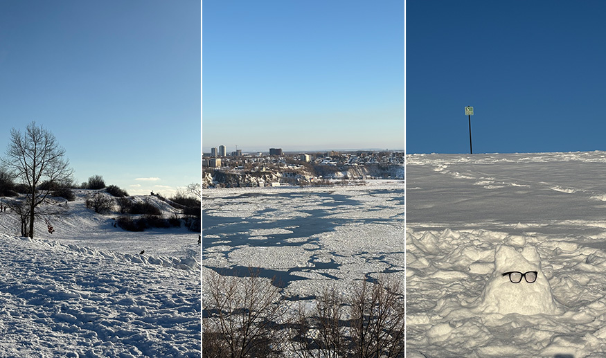
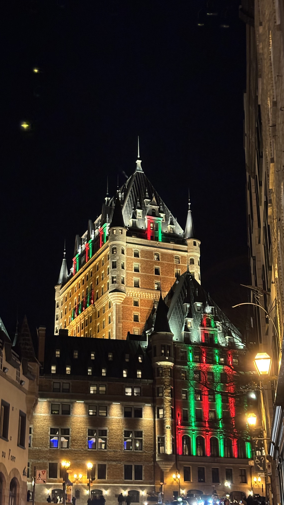
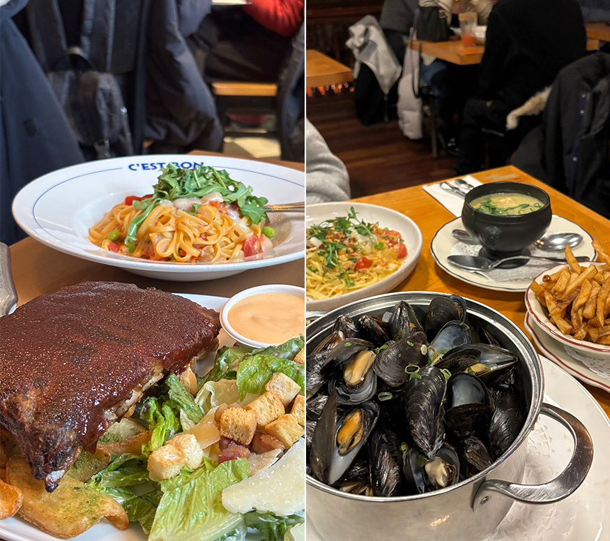

一直以來，魁北克對我而言，不只是加拿大的一座城市，更是韓劇《鬼怪》中那個充滿神奇故事跟浪漫氛圍的地方。
冬天踏上這座古城時，天空飄著不小的雪，路上一片潔白。明明眼前是真實的街景，卻總有一種走進韓劇場景的錯覺，不經一直讚嘆劇裡讓人心動的畫面，真的存在於現實世界之中。
這趟旅程，不只是一次與朋友的冬季旅行，更像是一場期待已久的朝聖之旅。
魁北克市（Québec City）位於加拿大東部，是魁北克省的首府。這座城市擁有濃厚的法式文化與歐洲風情，保存完整的石板街道、古城牆和歷史建築，使舊城區被聯合國教科文組織列為世界文化遺產。建築基本上都是歐式風格，飯店都蓋得很像歐洲的城堡，路上招牌、路標、菜單、人們講的話都會是法文，彷彿我真的到了法國。所以我在出發前有先用學語言的app學一點法語，不過只有比三分鐘長一點的五分鐘熱度，現在也只記得Bonjour!
 |
他們的麥當勞是綠色的招牌，跟一般鮮豔的紅色黃色標誌別有不同。
Mary’s Popcorn 是魁北克有名的爆米花店，酥脆口感能懂為什麼大排長龍。
 |
鬼怪電視劇場景裡面的紅門，隔著這道門鬼怪新娘可以從韓國直接到加拿大，好希望我也可以有這種能力去到任何我想去的地方！
（拍這扇門的遊客清一色都是亞洲面孔，可能歐美人不太懂我們為什麼要跟這一般的門合照）
 |
同樣也是鬼怪場景裡面的聖誕物品店，裡面賣了各式各樣的聖誕裝飾及相關小物，有很濃厚的聖誕氛圍，手上拿的是市集販售的熱紅酒，杯子是 PP 塑膠材質，適合喝完之後帶回家留念。
 |
這次來玩到最有趣的項目就是滑雪橇，首先要獨自拖著雪橇到很高很陡的坡上，再依據指示溜下來，整趟滑下來非常快速，十分刺激，一下就結束了，很多意猶未盡的人還會再去玩第二趟，每趟的費用為 $4，沒有很貴，可以至少體驗一次！
在那邊的 12 月底平均氣溫為 -14 度，出門戴好毛帽、手套跟圍巾是不可或缺的，而且就算全副武裝只要在外面待上半小時以上身體就會很不舒服，因為實在太冷了。所以隔一段時間必須找室內待著，讓身體回暖些再出門，外面真的呈現「冰天雪地」的畫面，地上很滑也可以體驗到「如履薄冰」的概念，我跟朋友在路邊堆了一個小雪精靈，同時也很讚嘆當地人是長時間如何在這種氣溫下生活的
 |
且如圖片所示，天色十分昏暗，那是16:30的景色，冬天的魁北克大概16:00太陽就會下山了，所以見到太陽的時間十分短暫
 |
另外有關飲食，魁北克充斥著義式/法式料理，我吃了不少像是義大利麵、淡菜、豬肋排、薄餅等美食，他們也流行吃鹿肉，但我沒有嘗試。有一餐吃了拉麵，在日式料理裡看到法文菜單跟混合日式法式的裝潢也是挺新奇的。
 |
聖誕節來魁北克是個很特別的體驗，有符合大家對聖誕節的既定印象：滿天的雪，冰冷的天氣和走在雪地上，我們有滑雪橇也有去溜冰，看了聖誕樹跟逛了聖誕市集，歐式的建築更增添了聖誕氣氛。不過聖誕節當天是他們的國定假日，所以其實路上看的店很少，我們找了好久才有東西吃。
這是一個很美妙的城市，如果有朝一日我能再去一趟的話我會選擇秋天，看看滿地的楓葉，氣溫也相對沒那麼低。
總之十分推薦大家去魁北克玩一次！